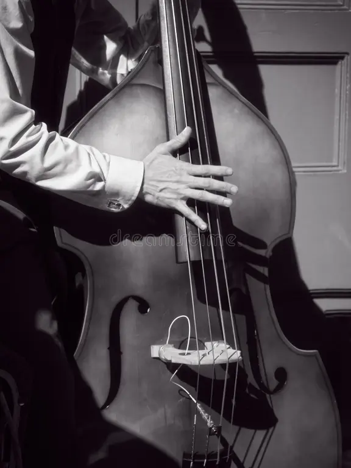

Jazz Vive Momento de Efervescência no Brasil
Maio de 2026
O jazz reafirma sua força como linguagem universal no Brasil este mês. Após as celebrações globais do Dia Internacional do Jazz (30 de abril), o calendário cultural brasileiro de maio está repleto de eventos.
Festivais e Circuitos

O Circuito Sesc Jazz & Blues 2026 segue como um dos principais motores do gênero, com programação em várias cidades.
Outro destaque é o C6 Fest com grandes nomes do jazz mundial.
Inovação e Fusões
A cena atual também se destaca pela experimentação e fusões musicais.
Por que o Jazz Importa?
O jazz é reconhecido como ferramenta de unidade cultural e influência global.